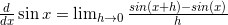
Using a trigonometric identity and regrouping we'll get: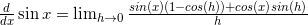
Now, could we only prove that 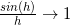 and 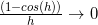 as 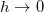, we'd get the 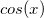 we want. But how do we prove those? L'Hopital's rule? At this point some people feel inclined to use the following "proof":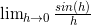
Using L'Hopital's rule, this is equivalent to: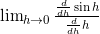
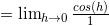
Which indeed goes to 1 as There's nothing wrong with using L'Hopital's rule in general, but we can't use it here, because we're creating a circular argument! We can't just assume that (for applying L'Hopital) when we're trying to prove it! We'll have to find another method. A geometrical proof Consider this diagram: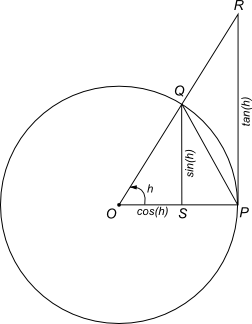
For simplicity, this is a unit circle (i.e. the length of QO is 1). QS is perpendicular to OP, and so is RP (which is a tangent). is the angle QOS. From trigonometry, QS equals 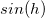 (QO is 1, recall) and OS equals 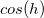. The triangles QOS and ROP are similar, so the ratio between RP and OP is the same as the ratio between QS and OS, which is 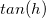. Since OP is 1, RP equals . Now let's consider the areas of triangles ROP and QOP, and the "pie" section of the circle defined by Q, O and P. The area of the triangle QOP is: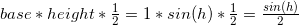
The area of ROP is similarly 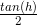. What is the area of the pie QOP? We'll compute it as follows: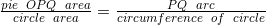
The area of a unit circle is , and its circumference is 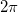, but how do we express the length of arc PQ? Defining radians Did you know why the units for angles used in calculus are almost exclusively radians? Because the radian is defined as follows:One radian is the angle subtended at the center of a circle by an arc that is equal in length to the radius of the circle.Here's a diagram (courtesy of Wikipedia):
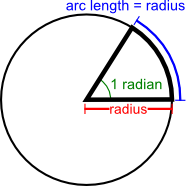
This is a very convenient definition that allows us to make computations without messing with too much s. Back to the proof So getting back to our arc PQ, it equals simply to the angle , when that one is defined in radians. That's because by the definition of radian above, if the angle is one radian, the arc length is 1 (since that's the radius of the unit circle). Hence if the angle is radians, the arc length is times 1. So we have: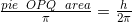
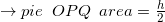
Now comes the punchline of the proof. It is obvious that the area of the triangle QOP is always smaller than the area of the pie QOP, which in turn is always smaller than the large triangle ROP. Mathematically: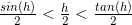
Dividing this by 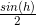: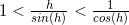
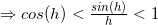
Now, if we let , then 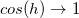, and it follows that by the squeeze theorem. Recall that we also have to prove that , but this is a simple step from by using the identity: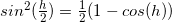
Now, if we go back to the limit we've developed for deriving the sine: Substituting the limits and here we get: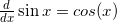
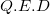